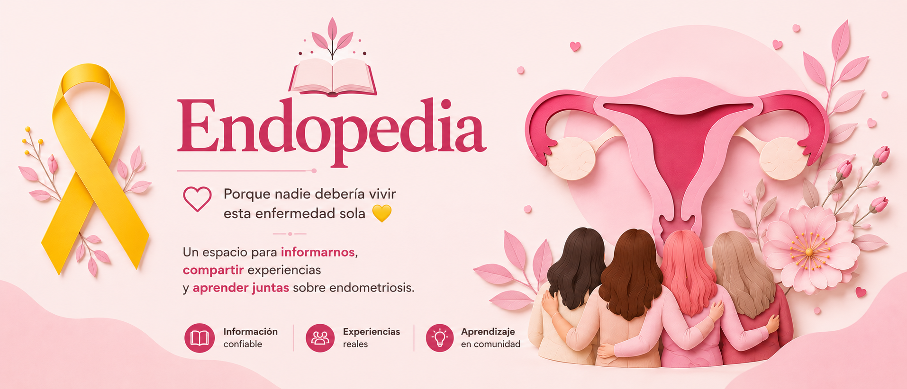

Explora los recursos
No encontramos resultados
Intenta usar otras palabras clave o elimina los filtros.

Este es un espacio cuidado para informarte, compartir y aprender. Encontrarás videos, explicaciones y experiencias organizadas por tema — explora a tu ritmo, sin prisa.
¿Buscas un fisioterapeuta de suelo pélvico en México? La Sociedad Mexicana de Fisioterapia en Pelviperineología (SOMEFIPP) cuenta con especialistas certificados que pueden guiar tu recuperación.
Intenta usar otras palabras clave o elimina los filtros.